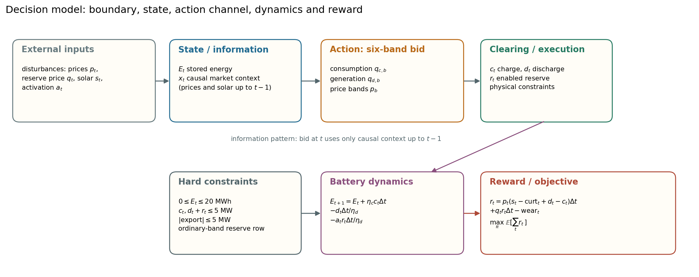

V21 · Dynamics and dynamic programming
From state transitions
to Bellman operators.
The controller is not a black box that maps prices to actions. It is a controlled system with a state, an action channel, a transition law, hard constraints and a reward. This page makes that model explicit.
The plots are diagnostics, not another leaderboard: a state–price phase portrait, learned value and shadow-price slices, and a small value-iteration lab that shows the Bellman operator contracting.
01 / Controlled system
What evolves,
what can be chosen?
| Element | Project definition |
|---|---|
| State | Stored energy Et; causal market context xt: lagged price and reserve price, lagged solar, time-of-day/day-of-week encodings, trailing price mean and volatility. |
| Observation | The same causal context. No within-interval price or solar lookahead. |
| Action | A six-band consumption/generation bid, with an explicit ordinary-band reserve carve-out. |
| Disturbance | Future energy price, future solar, reserve price and activation. |
| Reward | Energy cash + reserve capacity cash − modeled battery wear. |
| Constraints | 0–20 MWh stored energy; charge/discharge/reserve power limits; 5 MW connection; ordinary-band inventory floor. |
| Information pattern | Each bid uses only information available before interval t. |
| Horizon | Finite rolling horizon with five-minute receding-horizon replanning. |

02 / Dynamics and objective
The transition is
the constraint that matters.
Charging now raises future inventory; discharging now sells it. The reserve row is deterministic over every ordinary-price band:
If Et ≥ R, every clearing ordinary band is covered, no spike band clears, and charging is nonnegative, then Et+1 ≥ R. This protects inventory, not spike participation.
Bellman recursion
Vt(E, x) = maxu { rt(E, x, u) + γ E[Vt+1(E′, x′)] }. The finite-horizon backward pass returns a decision rule for every state; the market controller uses a receding-horizon approximation of it.
03 / Closed-loop diagnostics
Phase portrait
Each point is one five-minute interval in the October 2026 stress window. The R=6 policy occupies a higher stored-energy band at high prices and keeps a visible floor near 6 MWh; R=0 reaches 0 MWh.
Learned value slices
The learned critic is concave in stored energy. Its shadow price falls as the battery fills: the next MWh is worth less when inventory is abundant. Stress contexts are valued above calm and negative-price contexts.
Each point is one five-minute interval. Move the slider to inspect a recorded interval; the checkboxes toggle the two reserve policies.
Faded curves are the other contexts; the bold curve is selected. Move the SOC slider to read V(E) and dV/dE.
04 / Bellman operator lab
A small MDP where
the recursion is exact.
To check the dynamic-programming mechanics independently of the market simulator, the page solves a small infinite-horizon battery MDP: 41 stored-energy states, three price states (50, 200, 1,000 AUD/MWh), five actions (−1 to +1 MW), a sticky price chain, and discount γ = 0.95.
The browser re-solves the value iteration when a control changes. The model is stylized: three price states, 41 SOC states, five actions, no solar, reserve or connection limit.
05 / Course connections
The same structure,
different names.
| Course theme | Where it appears |
|---|---|
| Controlled systems | Boundary, state, action, disturbance and information pattern in the decision-model table. |
| Trajectory optimization / KKT | The scenario LP that forms the six-band bid. |
| Model predictive control | Five-minute receding-horizon replanning with physical constraints. |
| Finite-horizon DP | Bellman recursion, value slices and the receding-horizon scenario LP. |
| Infinite-horizon MDPs | The stylized DP lab: discounted Bellman operator, value iteration and contraction residual. |
| Approximate Bellman equations | Learned concave critic and shadow-price supporting cuts. |
| Monte Carlo / fitted Q | Scenario sampling, counterfactual reserve labels and fitted critic training. |
| Amortized action optimization | Contextual six-band bid and the one-step reserve selector. |
06 / Boundaries
What is empirical,
what is stylized.
The October phase portrait, learned value slices and market-performance numbers come from the frozen checkpoints and expanded NEM windows. The three-price DP lab is a teaching check: it has no solar, no reserve, no connection limit and no market clearing. It demonstrates the Bellman operator and contraction, not the project’s market value.
The learned value slices are not a causal estimate of market impact. The DP lab does not estimate an optimal long-run reserve. The reserve guarantee is an inventory property, not a claim about spike participation.
Full dynamics report · Reserve selector · Evidence and limits
Research update: from reserve to shield
V22 adds a certified multi-threshold inventory shield; the four-threshold ladder moves the stress/mean frontier beyond a scalar reserve. V23 shows that most per-state reserve-switching value is explained by choosing a better fixed reserve for the window, not by switching within it. V24 learns a continuous monotone curve and tests it on two new held-out real stress events. Every proposed method keeps the constrained scenario-LP control layer; the RL layer is a learned value or policy search. Rule-only and hand-value variants are baselines/ablations, not pure neural policies.
V22 shield report · V23 opportunity report · V24 continuous-shield report · substitution theorem page